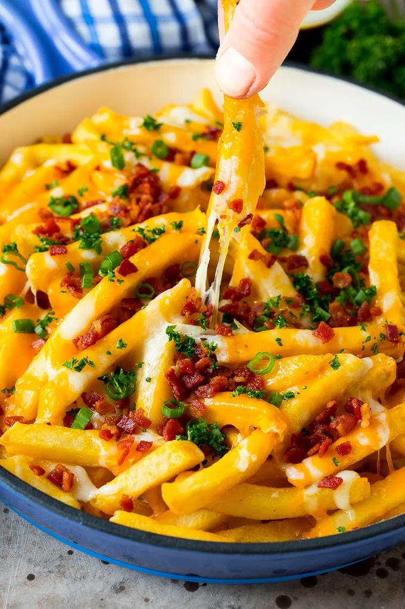

Cheese Fries

- Block of Cheese of choice
- Fries From the Store
- Green Onions
- Bacon 2 Strips
- Shred the block of cheese, making at least a 1/4 cup of shredded cheese.
Do not use shredded cheese from a bag as that cheese is coated in a material
that prevents it from melting.
- Chop the green onion until you have an appropriate amount for a garnish.
- Cook the bacon on the stove until it is slightly under cooked.
- Chop the bacon into bits.
- Begin cooking the fries as directed, either in an oven or in an air frier.
- 3-5 minutes before the fries are finished, quickly pull them out and throw the other ingredients on top.
- Finish cooking the fries as directed and you're good to go. Don't forget to let it cool off!